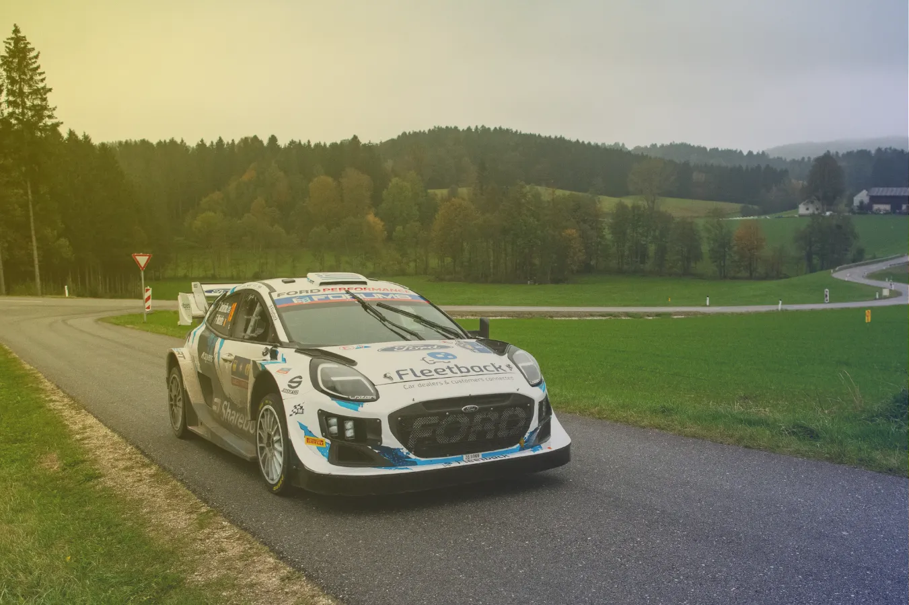
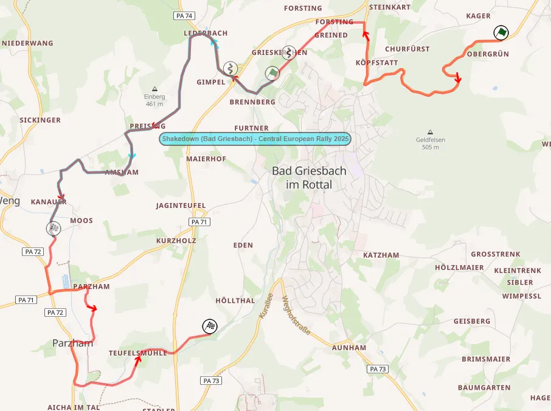
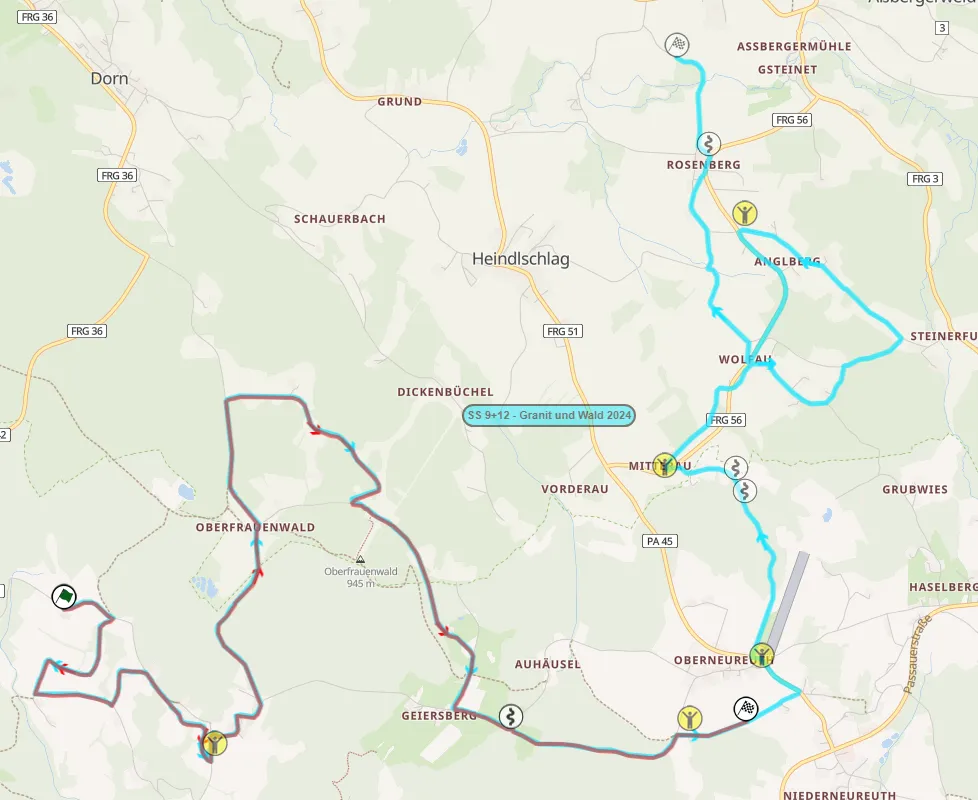
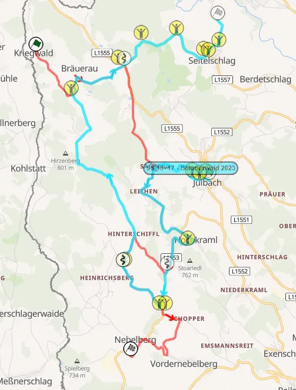
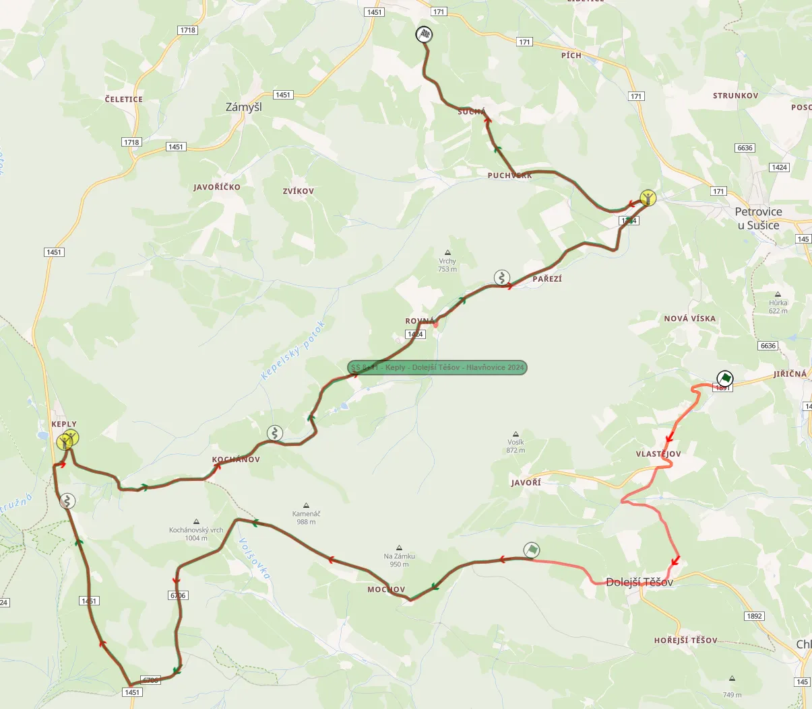
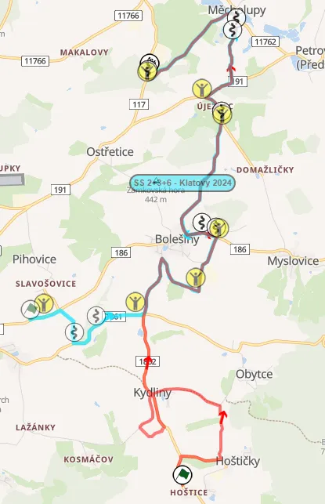
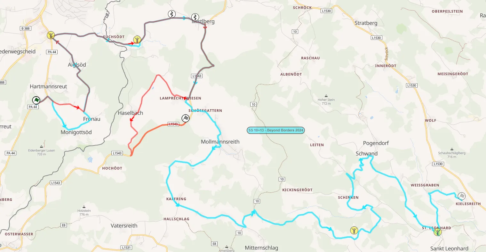
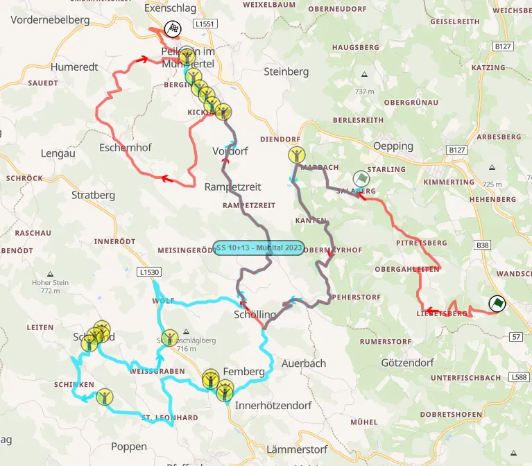

Central European Rally 2025 - Route Preview
Cover and thumbnail: Jaanus Ree / Red Bull Content Pool
Maps: Rally-Maps.com
In what seems to be the last time the Central European Rally will be part of the WRC calendar, the route has seen a big overhaul, with the event becoming more compact, ditching the Prague SSS and the liasion that goes with it.
72% of the route is new for this year, with Friday seeing the crews visit all three of the hosting countries.
Thursday
Thursday features a run of the pre-event Shakedown stage, as well as two passes of Golf und Therme, which contains the entire route of the Shakedown.
Shakedown: Bad Griesbach - 4.92km
Changes compared to past editions: New stage, not used before in the rally.
Stage description: The Shakedown stage starts off on a wide road with broken tarmac, which becomes smoother after it continues straight onto a two-lane road. It becomes broken again after a junction at 1.2km, continuing onto a fast road next to fields, going downhill.
After a junction, the stage takes a detour passing through a village, before rejoining the previous road at 3.7km.
The last 700m of the stage are on a gravel road, passing next to fields. This is the first time since Rally Germany in 2019 that we will see cars on a tarmac setup tackle a gravel section in a proper stage.
SS1/2 - Golf und Therme - 12.83km
Changes compared to past editions: New stage, not used before in the rally.

Map of Golf und Therme and the Shakedown stage
Stage description: Golf und Therme is unique, as it contains the entire Shakedown stage within its route. Whereas it is not out of the ordinary to have a stage use parts of the Shakedown stage, like Ruuhimaki in Finland or Baltar/Paredes in Portugal, using the whole stage, in the same direction is not that common, especially on the same day.
The first part of the stage is on a two lane road which is smooth. It passes through a forested area and has flowing medium speed corners, and a hairpin at 2.2km.
Following a junction at 2.8km, the stage joins a narrower road, with a flat-out section following, interrupted by a chicane. It then joins the Shakedown route.
At 8.8km, it continues on a narrow tarmac road after the gravel, before joining a wider one via a junction 400m later, leaving it almost immediately following a round about.
After a detour on a narrow road, it joins a two-lane road for 400m, before yet another junction onto a narrower road with broken tarmac. This last part of the stage is fast and narrow, with almost no slow corners.
Friday
At 99km long, this is the only time there will be less than 100km of stages on any Friday of the 2025 WRC season. The day features three repeated stages, one in each of the hosting countries. At the end of the morning loop there will be a tyre fitting zone in Kaplice. The afternoon loop stages are in reverse order, with Col de Jan as the opening stage of the loop, and Granit und Wald as the loop's closer.
SS3/8 Granit und Wald - 10.86km
Changes compared to past editions: It's the first 10.86km of the 2024 stage. The stage has been reduced to half its length compared to last year.

This year's Granit und Wald (red) compared to the one from 2024 (turquoise)
Stage description: For the first couple of kilometers, the stage uses a mix of narrow and bumpy tarmac roads, with high speed sections joined together by junctions. A hairpin at 3km leads the crews onto a wider and smoother road, which becomes slightly narrower as the stage enters the forest at 3.65km.
It gets wider, and has a flat-out section as it leaves the forest, turning onto a narrower road at 5.77km. A slightly more technical section follows, which includes a tricky hairpin at 7.22km, after which there is a flat-out section.
This road joins a wider one at 8.5km, with the end of the stage having two more very high-speed sections.
SS4/7 Böhmerwald - 15.27km
Changes compared to past editions: Shares some sections with the 2023 stage of the same name, which was used on Sunday. Out of these roughly 7km shared, 4 are in the same direction and 3 are in reverse compared to 2023.

This year's Böhmerwald (red) compared to the one from 2023 (turquoise)
Stage description: Böhmerwald starts on a narrow uphill road, passing next to fields. Almost all of the stage's first three kilometers are on an open area, with a few brief passes through more forested areas. Following a junction at 3km, the road surface becomes more broken, and the stage becomes more high-speed with little to no tight corners. There is a pass through a forest section at 4.4km, which is tricky.
Following a pass through the village of Sagberg, the stage joins the route used in 2023. The road is initially narrow and worn, but fast, becoming even faster as the stage widens at 6.2km.
There is a more technical section inside the forest, before the stage widens up again, passing through the village of Hochkraml. The road is now very wide and slightly worn, but remains high-speed, passing next to open fields.
After a hairpin at 9.5km, the road gets narrower and more broken, remaining fast, passing next to fields.
After a flat-out portion of the stage, it becomes narrower and slightly more technical, with a sequence with more than just junctions at 13.6km. After passing through a village, the stage concludes after yet another flat-out pass through a narrow road used to service nearby fields.
SS5/6 Col de Jan - 23.37km
Changes compared to past editions: This stage has not been used in the event before, but is a staple of the Rallye Český Krumlov.
Stage description: The first 5.6km of the stage are in the forest. The road is narrow and bumpy, and can get very dirty. It's also quite high speed, with some more technical medium speed corners also.
After a passage through a village, where the road gets narrower, the stage leaves the forest and continues onto a more open area, with the road remaining narrow and very bumpy, as well as fast.
Following a hairpin turn at 6.6km, it becomes wider, but also more technical, with slow and medium speed corners as the stage passes through Děkanské Skaliny. A high-speed section on smoother tarmac follows, including a crest at 8.61km.
At 10km, the stage passes through the village of Soběnov, and has a small "Mickey Mouse" section passing next to the village's houses. It leaves this section via a junction at 11.25km, and joins a wide and smoother road for a flat out portion, lasting about two kilometers.
It then joins a narrower road, with this segment of the stage being high speed sections connected together with junctions. A few slower corners appear after the stage crosses through another village, with a small intersection at 16.3km.
Following that, the stage continues to be fast and narrow, with a crest at 17.3km, while also joining the forest momentarily from 18 to 18.7km.
The rest of the stage is very fast, on a wider road, with the finish being after a fan section in a warehouse.
Saturday
Saturday again features two loops of three repeated stages, and is the longest day of the rally. Two of the day's stages are in the Czech Republic, and one is in Germany. Made in FRG and Keply are brand new, and Klatovy sees some changes compared to last year.
SS9/14 Made in FRG - 14.30km
Changes compared to past editions: Brand new stage, not used before in the rally.
Stage description: This new stage starts off in a forest, on a narrow road with a broken surface. After leaving the forest, it turns onto a wider two-lane road. It veers off of it at 2.66km, and joins a new, narrower one, passing through a village.
This section is mostly high-speed sections and junctions, with the stage joining the same two-lane road as before at 4.70km, and then passing through a town.
After a junction at 6.15km, the road becomes narrower and more broken, remaining high-speed, almost straight for the next kilometer. It then joins an uphill road that is wider and remains fast until a junction at 8.4km.
The stage then joins a narrower road, passing through Passreut, remaining mostly fast, going downhill.
At 11.13km, the stage becomes wide again momentarily, before turning onto a narrower road, passing through yet another village.
It continues onto this narrow and broken road, which is absent of any tight corners, before turning onto a more worn road at 12.72km, which gets smoother as it leaves the forest. It remains the same until 500m before the finish, where the stage takes a detour onto a more worn road in order not to pass through Nebling.
SS10/12 Keply - 21.95km
Changes compared to past editions: Brand new stage, not used before in this rally. Parts of Keply have been used in the Historic Vltava Rallye and the Rallye Sumava Klatovy in the past.

Keply (red) compared to the Keply - Dolejší Těšov - Hlavňovice stage used in the Historic Vltava Rallye this year (green)
Stage description: The initial getaway is on a medium-wide, broken tarmac road. After a pass through a village, it turns onto a very narrow and tricky road, which runs on a newly paved section at 1.84km. After a junction at 3km, it turns onto another narrow but smooth road.
As the stage enters the forest at 4.1km, it becomes worn and bumpy, before becoming wider and smoother as it exits it. The stage changes between worn tarmac and newly paved one, with the worn sections being mostly when the stage passes through the forest.
It joins a wider road at 9.5km, with a high-speed section following. A junction at 11.71km leads the crews onto another narrow road, which is fast and bumpy. From 13 to 18km, the stage has a lot of steep downhill sections.
The stage gets very narrow when inside the forest, remaining fast. These sections are reminiscent of the ones seen in Barum Rally Zlin. After a short high-speed section in a more open area, the route passes through a village, where the road becomes smoother and wider.
After a junction at 18.9km, it becomes narrow, bumpy, and fast again, this time uphill. The end of the stage is on a slightly less worn surface, in an open area, and has a few more winding and flowing corners.
SS11/13 Klatovy - 15.57km
Changes compared to past editions: Last year's Klatovy stage, only with a different start.

This year's Klatovy (red) compared to the one from 2024 (turquoise)
Stage description: The new start of the stage is on a medium wide and worn fast road. After a tight hairpin at 1.2km, the stage continues onto a fast and tricky narrow section. Following a junction at 2km, it becomes narrower and bumpier, before eventually becoming smoother as the stage nears Kydliny, also passing next to a small lake.
After another junction and a short high-speed section, there is a small detour through a new road, and then continues back to Kydliny, joining the route of last year's stage.
The next portion of the stage is a mix of high speed sections linked together by junctions, with both narrow and medium wide roads used. The next two kilometers are on a fast road that's narrow and bumpy. It widens following a chicane at 11.57km, with the next corner being a downhill left, which saw Yohan Rossel almost roll his C3 Rally2 last year.
After a brief 500m stint on a wide and smooth road, the stage becomes narrower and bumpy until the finish.
Sunday
Sunday is the rally's shortest day at 77.82km, featuring two repeated stages. Beyond Borders, as the name suggests, passes through the countries of Germany and Austria, and Mühltal is the rally's Power Stage.
SS15/17 Beyond Borders - 12.37km
Changes compared to past editions: Uses parts of the start of last year's Beyond Borders stage.

Beyond Borders (red) compared to the one from 2024 (turquoise)
Stage description: It starts off on a wide and smooth road, before turning onto a narrower and bumpier one, for a very fast section. The stage passes through a village at 2km, with a big straight following, and then a high speed passage.
The stages crosses the border into Austria through a narrow bridge at 4.3km. The jump and the pass through the warehouse area that featured in 2024 are omitted from the stage this year. It continues to be generally fast, on a medium-wide road, crossing another village at 6.1km. After the village, the stage turns onto a very wide two-lane road, which is very fast, with just one tight corner at 7.36km.
At 8.2km, the stage deviates from the 2024 route, turning onto a narrower road. This road becomes very broken, with grass growing from the middle until it turns into gravel. This short gravel section leads the crews back onto a fast, wide, two-lane road via a tight hairpin.
SS16/18 Mühltal - 26.52km
Changes compared to past editions: Uses sections of the 2023 Mühltal stage. The new finish was used as part of the Peilstein stage in the 3 Städte Rallye.
It's the longest Power Stage that we've ever had on a tarmac surface.

This year's Mühltal (red) compared to the one from 2023 (turquoise)
Stage description: The new start of the stage is on medium-wide roads, with nice flow and high-speed sections, passing next to fields and open areas.
Following a double hairpin at the village of Salaberg, the stage joins the route of the 2023 version of Mühltal, and it turns onto a narrower and bumpier road, and has a tricky downhill section through another village. That road becomes quite worn, with grass growing in the middle of it at 6.85km. It then joins a medium-wide and smooth road, which has many fast and medium-speed corners, going downhill.
The stage gets narrower and more worn at 10.85km, with a tricky section inside the forest following.
The next part is mostly fast, on narrow roads, with a technical section at 14.2km just before the stage enters the forest and gets faster. After a more technical section where it gets narrower, it leaves the 2023 route at 17.92km.
An uphill high-speed section on a broken road in the forest follows, with the stage continuing to be very fast even after it leaves the forested area. At 22.4km, the stage becomes slower and technical with a series of downhill hairpins and slower corners on a worn road.
It enters Peilstein im Mühlviertiel, and the next 2 or so kilometers are inside the town, passing next to buildings on a narrow road.
The stage then becomes very wide at 25km, and then joins a brand new two-lane road that is fast and has downhill hairpins, until the finish.


Comments